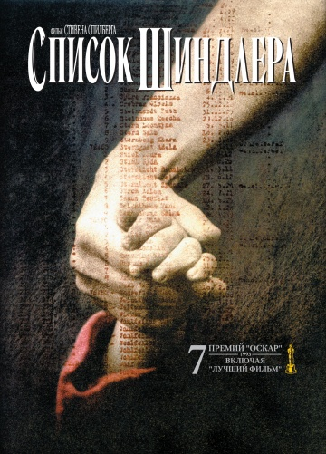
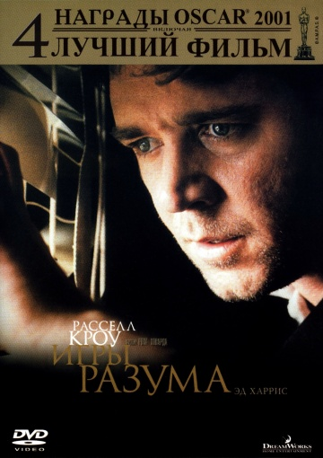

Побег из Шоушенка
The Shawshank Redemption(1994)

Зеленая миля
The Green Mile(1999)
Форрест Гамп
Forrest Gump (1994)
- 
Список Шидлера
Schindler's List(1993)

1+1
Intouchables (2011)
Начало
Inception (2010)
Король Лев
The Lion King (1994)

Леон
Leon (1994)

Бойцовский клуб
Fight Club (1999)
Жизнь прекрасна
La vita è bella (1997)
Иван Васильевич меняет профессию (1973)
Достучаться до небес
Knockin' on Heaven's Door (1997)
Крестный отец
The Godfather (1972)
Интерстеллар
Interstellar (2014)
Престиж
The Prestige (2006)
- 
Игры разума
A Beautiful Mind (2001)
Криминальное чтиво
Pulp Fiction (1994)
Операция «Ы» и другие приключения Шурика (1965)

Властелин колец: Возвращение Короля
The Lord of the Rings: The Return of the King (2003)
Гладиатор
Gladiator (2000)

Назад в будущее
Back to the Future (1985)
Карты, деньги, два ствола
Lock, Stock and Two Smoking Barrels (1998)
Пианист
The Pianist (2002)
Поймай меня, если сможешь /Catch Me If You Can (2002)
В бой идут одни старики (1973)

Зверополис
Zootopia (2016)

Властелин колец: Братство кольца
The Lord of the Rings: The Fellowship of the Ring (2001)

Отступники
The Departed (2006)

Бриллиантовая рука (1968)

Властелин колец: Две крепости
The Lord of the Rings: The Two Towers (2002)
Матрица
The Matrix (1999)
Американская история Х
American History X (1998)
Большой куш
Snatch (2000)
Валл-И
Wall-e (2008)
Остров проклятых
Shutter Island (2009)
Пролетая над гнездом кукушки /One Flew Over the Cuckoo's Nest (1975)
Пробуждение
Awakenings(1990)
Пираты Карибского моря: Проклятие Черной жемчужины
Pirates of the Caribbean: The Curse of the Black Pearl (2003)
Хористы
Les Choristes (2004)
Джентльмены удачи (1971)
Темный рыцарь
The Dark Knight (2008)
Хатико: Самый верный друг
Hachi: A Dog's Tale (2008)

Запах женщины
Scent of a Woman (1992)
Огни большого города
City Lights (1931)
12 разгневанных мужчин
12 Angry Men (1957)
Эта замечательная жизнь
It's a Wonderful Life (1946)
Унесённые призраками
Sen to Chihiro no kamikakushi (2001)
В джазе только девушки
Some Like It Hot (1959)

Титаник
Titanic (1997)
...А зори здесь тихие (1972)
Приключения Шерлока Холмса и доктора Ватсона: Собака Баскервилей (1981)
Хороший, плохой, злой
Il buono, il brutto, il cattivo (1966)
Крестный отец 2
The Godfather: Part II (1974)
Как приручить дракона
How to Train Your Dragon (2010)
Молчание ягнят
The Silence of the Lambs (1990)

Кавказская пленница, или Новые приключения Шурика (1966)
Семь
Se7en (1995)

Джанго освобожденный
Django Unchained (2012)
Шоу Трумана
The Truman Show (1998)
Нокдаун
Cinderella Man (2005)
Шерлок Холмс и доктор Ватсон: Знакомство (1979)
Игра
The Game (1997)
Одержимость
Whiplash (2013)
Собачье сердце (1988)
Храброе сердце
Braveheart (1995)
Офицеры (1971)
Прислуга
The Help (2011)
Терминатор 2: Судный день /Terminator 2: Judgment Day (1991)
Москва слезам не верит (1979)
Малыш
The Kid (1921)
В погоне за счастьем
The Pursuit of Happyness (2006)

Летят журавли (1957)
Гран Торино
Gran Torino (2008)
Человек дождя
Rain Man (1988)
Изгой
Cast Away (2000)

Балто
Balto (1995)
Судьба человека (1959)
Шестое чувство
The Sixth Sense (1999)
Белый Бим Черное ухо (1976)
Укрощение строптивого
Il bisbetico domato (1980)
Унесенные ветром
Gone with the Wind (1939)
Однажды в Америке
Once Upon a Time in America (1983)
Римские каникулы
Roman Holiday (1953)
Красавица и чудовище
Beauty and the Beast (1991)
Гонка
Rush (2013)

Дневник памяти
The Notebook (2004)
Спасти рядового Райана
Saving Private Ryan (1998)
Жизнь других
Das Leben der Anderen (2006)
Эффект бабочки
The Butterfly Effect (2003)
Ходячий замок
Hauru no ugoku shiro (2004)
Темный рыцарь: Возрождение легенды
The Dark Knight Rises (2012)
Назад в будущее 2
Back to the Future Part II (1989)
Амадей
Amadeus(1984)

Шерлок Холмс и доктор Ватсон: Смертельная схватка (1980)
Счастливое число Слевина
Lucky Number Slevin(2005)
Мальчик в полосатой пижаме
The Boy in the Striped Pyjamas (2008)
Служебный роман (1977)
Они сражались за Родину (1975)
Баллада о солдате (1959)
…А в душе я танцую
Inside I'm Dancing (2004)